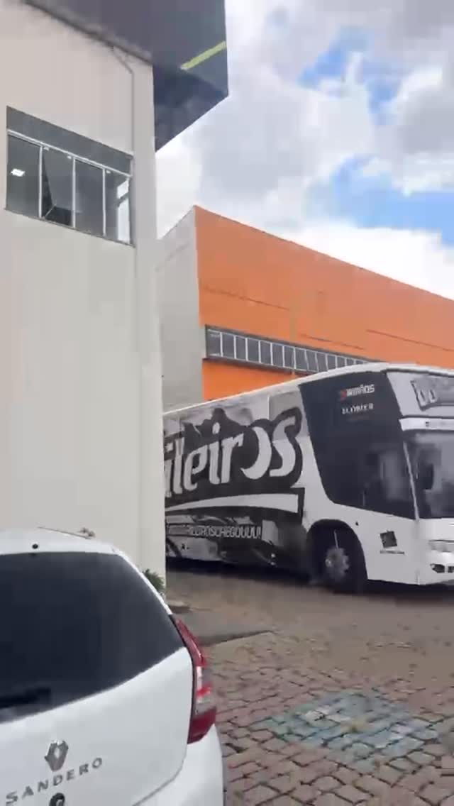

15 ANOS · MÚSICA, HISTÓRIA E ESTRADA
O baile começa aqui.
A próxima história é com você.
De “Meio Bruta” a “Prendinha de Rodeio”.
Dê o play, cante junto e sinta a nossa energia.
01 / ALÉM DO PALCO
O GRUPO, OS MÚSICOS & A ESTRADAHISTÓRIA
A RAIZ É DO SUL.
A ENERGIA É
OS BAILEIROS.
São 15 anos de história, encontros e muita música. Os Baileiros carregam no nome a sua essência: fazer do palco um convite para dançar e de cada apresentação uma boa lembrança.
De Meio Bruta a Prendinha de Rodeio, o repertório aproxima a tradição gaúcha de quem vive a música de hoje. É essa troca entre a banda e o público que dá sentido a cada novo baile.
Gente que vive a música.
Na voz de Neném, nos instrumentos e na parceria entre os músicos, o grupo encontra a sua identidade. As conversas com Neném e Zeca Knirsch revelam um pouco dessa caminhada, dentro e fora do palco.
Conheça as histórias dos músicos
NOSSO GIRO NA ESTRADACADA DESTINO,
UM NOVO BAILE.
Antes de a primeira música tocar, a nossa história já está na estrada. O ônibus leva a equipe, os instrumentos e a vontade de encontrar vocês no próximo palco.
02 / APERTE O PLAY
CADA CANÇÃO,
UM NOVO ENCONTRO.
O sucesso que você canta junto.
Os clipes que merecem o replay.
Meio Bruta
Nossas faixas. Seu próximo play.
UM BOM PAPO.
MUITA HISTÓRIA.
As vozes por trás da música. Bastidores, memórias e estrada no YouTchê Podcast.
03 / AGENDA DE SHOWS
BAILE MARCADO, PRESENÇA GARANTIDAA ESTRADA
CONTINUA.
Confira os próximos bailes.
O seu evento pode ser o próximo da lista.
04 / ARTE, FOTOS & MEMÓRIAS
O BAILE PASSA.
A HISTÓRIA FICA.
Retratos, artes e momentos
da nossa vida na música.
Vai divulgar um baile com a gente?
Peça as fotos e artes à nossa produção.
05 / CONECTE-SE COM A MÚSICA
SEM DISTÂNCIA. SEM PAUSA.A GENTE SE ENCONTRA
NA SUA PLATAFORMA.
SHOWS & EVENTOS · CONTRATAÇÕES
SEU EVENTO.
NOSSO PRÓXIMO PALCO.
Seu evento. Nossa música.
Fale com a equipe e consulte a disponibilidade para sua data.